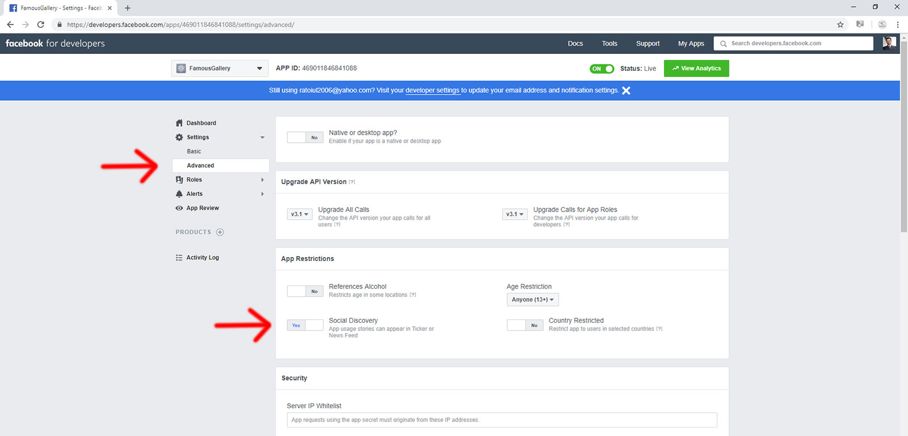

HELP
Thank you for purchasing our product!
NOTE: You need to test the player on a server or a virtual server.
The product uses audio6_html5.css file which contains the controllers skin classes
The images used by the controllers skin are located in this folder and distributed in subfolders with the controller skin name.
All the .js files are located in this folder. The product uses jquery. The product is generated by audio6_html5.js
For your convenience we've created for each controller skin and example a .html file. In each file you'll find all the necessary code for implementation.
Shoutcast and Iceast link structure
- SHOUTCAST LINK
https://[domain]:[port] OR
http://[ip]:[port]
Ex: http://69.46.75.69:80
IMPORTANT: For the vast majority of the shoutcast streams, try appending "/;" to the stream so it looks like this:
http://[ip]:[port]/;
Ex: http://69.46.75.69:80/;
- ICECAST LINK
http://[domain]:[port]/mountpoint
Ex: http://kocka.limemedia.cz:8000/cityfm128.mp3
- RADIONOMY LINK
For radio hosted by radionomy.com, the link looks like this: http://streaming.radionomy.com/ABC-Piano
Due to the fact that the IP is unknown, the player can't access current playing song name and artist photo. It will play it and it will display the radio name.
NOTE: Radio Stream should be MP3 type. It will also play AAC/AAC+ streams but only on browsers which support AAC/AAC+
| Attribute | Default Value | Description |
| General settings | ||
| radio_stream | 'http://194.232.200.150:80/;' | The radio stream you want to play. Please check Shoutcast and Iceast link structure section for additional details. |
| url_custom_metdata_file | '' | In case your radio server doesn't offer a standard location for the metadata file, you can add the direct url to your radio stream metadata file here. |
| metadata_file_type | '' | In case you've set an url for 'url_custom_metdata_file' parameter you need to also define it's type. This parameter can take values from 1 to 4 1 - stats?sid=1 2 - 7.html 3 - status-json.xsl 4 - status.xsl |
| azuracast_api_nowplaying_url | '' | ONLY if you'll use an AzuraCast radio stream you'll define the url to the AzuraCast nowplaying API. Example: https://YOUR_RADIO_DOMAIN.com/api/nowplaying/YOUR_RADIO_SHORTCODE |
| azuracast_get_image |
false | Possible values: true - the player will get the artist image from the AzuraCast nowplaying API false - the player will get the artist image from the musicbrainz.org database |
| radio_name | 'Idobi Anthm' | The radio station name |
| skin | 'whiteControllers' | The audio player comes with 2 predefined controllers skins (white and black). By controllers we understand play, pause, volume, facebook, twitter, show/hide playlist buttons. These buttons are saved as .png images. If you need another color for these controllers, you have the PSD files included and you can save over one skin, the controllers with another color.
Possible values: |
| responsive |
true | Possible values: true - the player will responsive false - the player will not be responsive |
| playerWidth | 355 | player width |
| imageHeight | 355 | top image height. For image width it will use 'playerWidth' parameter |
| autoPlay | true | Possible values: true - autoplays audio file false - doesn't autoplay audio file |
| songTitleColor | '#ffffff' | Audio file Title text area color (hexa) |
| authorTitleColor | '#ffffff' | Audio file Author text area color (hexa) |
| lineSeparatorColor | '#636363' | The line separator between the song title and song author |
| radioStationColor | '#ffffff' | Radio name text area color (hexa) |
| frameBehindTextColor | '#000000' | The color (hexa) of the frame behind song title and song author |
| frameBehindButtonsColor | '#454545' | The color (hexa) of the frame behind radio name and share buttons |
| playerBorderSize | 0 | The size for entire player border (including history area) |
| playerBorderColor | '#000000' | The player border color (hexa) |
| sticky | false | Possible values: true - the radio player will be positioned on the right-bottom corner beeing fixed while the page scrolls false - the radio player will NOT be sticky and it will behave like any other element on the page. |
| startMinified | false | Possible values: true - the radio player start with large image and history area hidden. If you set this parameter true you also need to set sticky:true false - the radio player will start with large image and history area visible. |
| showOnlyPlayButton | false | Possible values: true - all the elements of the player will be hidden except for play/pause button false - all the elements of the player will be visible |
| centerPlayer | false | Possible values: true - the radio player will be centered in your layout div false - the radio player will not be centered in your layout div |
| preserveOriginalUpperLowerCase | false | Possible values: true - the current playing song title and author letters will be displayed as they come from the metadata file false - the current playing song title will have text-transform:uppercase and author will have text-transform:capitalize |
| facebookAppID | '' | FaceBook AppID. Please check Facebook Share section, for more informations |
| facebookShareTitle | 'HTML5 Radio Player With History - Shoutcast and Icecast' | The title which will appear on FaceBook share. Please check Facebook Share section, for more informations |
| facebookShareDescription | 'A top-notch responsive HTML5 Radio Player compatible with all major browsers and mobile devices.' | The description which will appear on FaceBook share. Please check Facebook Share section, for more informations |
| facebookShareImage | '' | The image which will appear on FaceBook share. Please check Facebook Share section, for more informations |
| nowPlayingInterval | 35 | The calling interval (in seconds) for the file which reads the current playing song |
| grabLastFmPhoto | true | Possible values: true - it will grab the artist photo false - it will always use the image specified by 'noImageAvailable' parameter |
| noImageAvailable | 'noimageavailable.jpg' | The path to 'No Image Available' image which will appear when there's no image found in the database |
| optional_images_path | '' | In case you have your images stored on your server (the same as your website) and you want to use those images for the current playing song. The image name should be identical with the current playing song. Example: Artist Name - Song Name.jpg |
| iceCastFirst | false | Possible values: true - it will first read the metadata files of the IceCast stream false - it will first read the metadata files of the ShoutCast stream |
| mscp_pro_api_url | '' | in the case you are using a MSCP PRO radio server, you can add the direct url to the MSCP PRO Api, json version, so that the cover image will be taken from MSCP PRO radio server. |
| showListeners | false | Possible values: true - it will display the number of listeners near the radio name false - it will not display the number of listeners near the radio name |
| translateListeners | Listeners | You can translate "Listeners" in your own language, if you'll display the number of listeners |
| Controllers Settings: Show/Hide buttons & elements | ||
| showVolume | true | Possible values: true - volume button will appear false -volume button will not appear |
| showFacebookBut | true | Possible values: true - facebook button will appear false - facebook button will not appear |
| showTwitterBut | true | Possible values: true - twitter button will appear false - twitter button will not appear |
| showRadioStation | true | Possible values: true - radio station name will appear false - radio station name will not appear |
| showTitle | true | Possible values: true - current playing song will appear false - current playing song will appear |
| showHistoryBut | true | Possible values: true - show/hide history button will appear false - show/hide history button will not appear |
| History Settings | ||
| showHistory | true | Possible values: true - history will appear false - history will not appear |
| showHistoryOnInit | true | Possible values: true - history will appear on init false - history will not appear on init |
| translateReadingData | "reading history..." | You can translate "reading history..." in your own language (if needed) |
| historyTranslate | "HISTORY - latest played songs" | You can translate "HISTORY - latest played songs" in your own language (if needed) |
| historyTitleColor | '#858585' | history title color (hexa) |
| historyBgColor | '#ebebeb' | history background color (hexa) |
| historyRecordBgColor | 'transparent' | history item background color (hexa) |
| historyRecordBottomBorderColor | 'transparent' | history item bottom border color (hexa) |
| historyRecordSongColor | '#000000' | history item song title color (hexa) |
| historyRecordAuthorColor | '#6d6d6d' | history item song author color (hexa) |
| historyRecordSongBottomBorderColor | '#d0d0d0' | history item line color between the song title and song author (hexa) |
| numberOfThumbsPerScreen | 3 | Number of items shown in the history. You'll have to scroll to see the rest |
| historyPadding | 18 | history inner padding |
| historyRecordTitleLimit | 25 | The history record title characters limit. All the other characters will be remoeved and replaced with ... |
| historyRecordAuthorLimit | 36 | The history record author characters limit. All the other characters will be remoeved and replaced with ... |
| historyMaxNumberOfSongs | 12 | The player will use this parameter to limit the number of songs displayed in the history |
Example of usage:
jQuery("#lbg_audio6_html5_shoutcast_1").audio6_html5({
radio_stream:"http://69.46.75.69:80/;",
radio_name:"Idobi Anthm",
playerWidth:355,
imageHeight:355,
skin:"whiteControllers",
responsive:true,
grabLastFmPhoto:true,
autoPlay:true,
songTitleColor:"#ffffff",
authorTitleColor:"#ffffff",
lineSeparatorColor:"#636363",
radioStationColor:"#ffffff",
frameBehindTextColor:"#000000",
frameBehindButtonsColor:"#454545",
sticky:false,
startMinified:false,
showOnlyPlayButton:false,
centerPlayer:true,
playerBorderSize:0,
playerBorderColor:"#000000",
showFacebookBut:true,
facebookAppID:"",
facebookShareTitle:"HTML5 Radio Player With History - Shoutcast and Icecast",
facebookShareDescription:"A top-notch responsive HTML5 Radio Player compatible with all major browsers and mobile devices.",
showTwitterBut:true,
showVolume:true,
showRadioStation:true,
showTitle:true,
showHistoryBut:true,
showHistory:true,
showHistoryOnInit:true,
translateReadingData:"reading data...",
historyTranslate:"HISTORY - latest played songs",
historyTitleColor:"#858585",
historyBgColor:"#ebebeb",
historyRecordBgColor:"transparent",
historyRecordBottomBorderColor:"transparent",
historyRecordSongColor:"#000000",
historyRecordSongBottomBorderColor:"#d0d0d0",
historyRecordAuthorColor:"#6d6d6d",
numberOfThumbsPerScreen:3,
historyPadding:16,
historyRecordTitleLimit:28,
historyRecordAuthorLimit:36,
nowPlayingInterval:15,
noImageAvailable:"noimageavailable.jpg"
});
HTML/JS code for implementation
Step 1: Copy on your server/project the following files and folders: js, controllers, audio6_html5.css and noimageavailable.jpg. Of course you can move the files in other folders, but you'll take care to correct the paths to the files
Step 2: Open the .html file associated with the controller skin you want to use. For example, if you want to use "whiteControllers" controllers skin, open an example like standard_version_white_controllers.html
Step 3: Put the below code in the <head> section of your file. This code has to be copied from the <head> section of the file you've opened (EX: standard_version_white_controllers.html) to assure you include the controller skin correctly.
<!-- must have -->
<link href="audio6_html5.css" rel="stylesheet" type="text/css">
<link href="https://fonts.googleapis.com/css?family=PT+Sans:400,400i,700,700i" rel="stylesheet">
<script src="https://ajax.googleapis.com/ajax/libs/jquery/3.5.1/jquery.min.js" type="text/javascript"></script>
<script src="https://ajax.googleapis.com/ajax/libs/jqueryui/1.12.1/jquery-ui.min.js"></script>
<script src="js/jquery.mousewheel.min.js" type="text/javascript"></script>
<script src="js/jquery.touchSwipe.min.js" type="text/javascript"></script>
<script src="js/audio6_html5.js" type="text/javascript"></script>
<!-- must have -->
<script>
jQuery(function() {
setTimeout(function(){
Step 4: In the <body> section copy the code below. This code has to be copied from the <body> section of the file you opened (EX: standard_version_white_controllers.html) to assure you include the controller skin correctly.
<div class="audio6_html5">
<div id="lbg_audio6_html5_shoutcast_1">
</div>
</div>
In order for the Facebook share button to work you need to obtain a Facebook Application ID
1. Go to the Facebook Developers Apps page and and sign in with your Facebook username and password.
2. Click the "Add a New App" button.
If you do not see the option to create a new app in the upper right hand corner, click on "Register as Developer."
3. After that you'll obtain an 'App ID' which you'll paste in facebookAppID parameter when you'll initialize the player
jQuery('#audio6_html5_white').audio6_html5({
radio_stream:"http://69.46.75.69:80/;",
radio_name:"Idobi Anthm",
skin: 'whiteControllers',
facebookAppID:'YOUR_NEW_APPID',
playerWidth:500,
autoPlay:true
});
4. Go to Settings->Basic tab (left area), select 'Website' and insert your website URL and fill all the other information. Below you have a demo screenshot. Of course, you'll use your own info.
5. Go to Settings->Advanced tab (left area) and activate 'Social Discovery'

6. To personalize more the share content you can use facebookShareTitle and facebookShareDescription parameters when you initialize the player. Please check JS Options section, to see all available parameters